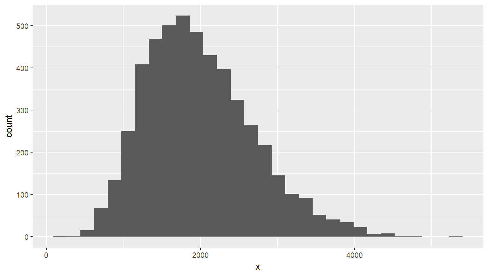
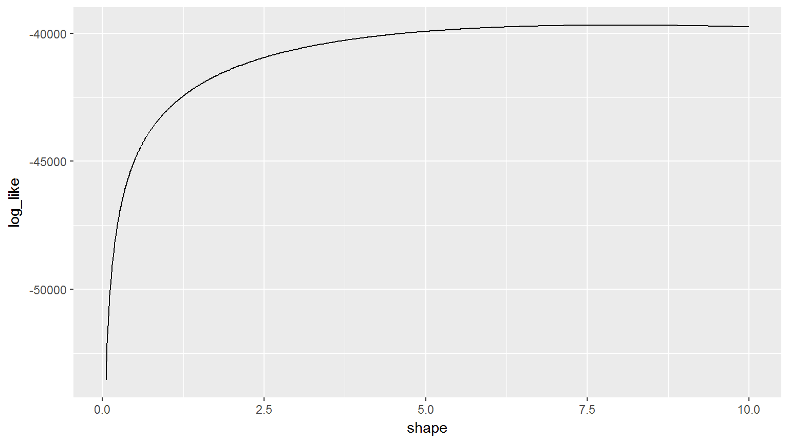
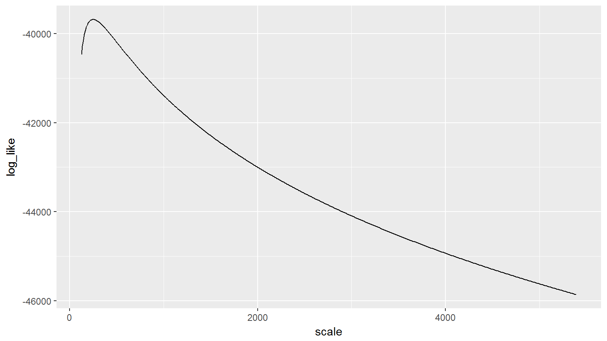
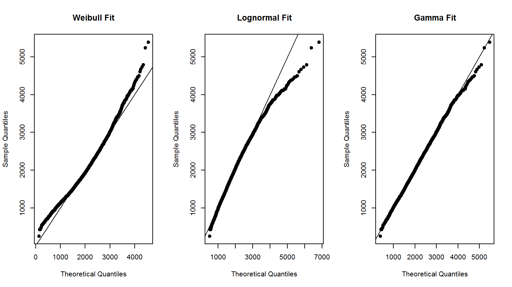

set.seed(8910)
sims <- 5e3
scale <- 250
shape <- 8
severity <- rgamma(sims, shape, scale = scale)
summary(severity)
## Min. 1st Qu. Median Mean 3rd Qu. Max.
## 250.4 1469.4 1901.2 1994.8 2429.2 5390.6data.frame(x = severity) %>%
ggplot(aes(x)) +
geom_histogram()
\[\alpha=shape\]
\[\beta = scale\]
\[L(\alpha,\beta)=(\alpha-1)\sum{log(x_i)}\] \[-(1/\beta)\sum{x_i}-n\alpha*log(\beta)-n*log(\Gamma(\alpha))\]
log_like_gamma <- function(x, shape, scale) {
n <- length(x)
log_like <- sum(x) / scale + n * shape * log(scale) + n * log(gamma(shape))
log_like <- (shape - 1) * sum(log(x)) - log_like
log_like
}log_like_gamma(severity, c(0.5, 2), c(500, 1000))
## [1] -57182.66 -41380.14
tbl_log_like <- data.frame(
shape = seq(0.05, 10, length.out = 500)
)
tbl_log_like <- tbl_log_like %>%
mutate(
scale = mean(severity) / shape
, log_like = log_like_gamma(severity, shape, scale)
)
## Warning: package 'bindrcpp' was built under R version 3.4.4tbl_log_like %>%
ggplot(aes(shape, log_like)) +
geom_line()
tbl_log_like <- data.frame(
scale = seq(0.5 * min(severity), max(severity), length.out = 500)
)
tbl_log_like <- tbl_log_like %>%
mutate(
shape = mean(severity) / scale
, log_like = log_like_gamma(severity, shape, scale)
)tbl_log_like %>%
ggplot(aes(scale, log_like)) +
geom_line()
tbl_log_like <- expand.grid(
scale = seq(0.5 * min(severity), max(severity), length.out = 250)
, shape = seq(0.05, 10, length.out = 250)
) %>%
mutate(
log_like = log_like_gamma(severity, shape, scale)
)tbl_log_like %>%
ggplot(aes(scale, shape)) +
geom_raster(aes(fill = log_like), interpolate = TRUE) +
scale_fill_continuous(low = 'red', high = 'green')fitdistrDirectly examining the log-likelihood is instructive, but we don’t do this in practice.
fitdistrlibrary(MASS)
fitGamma <- fitdistr(severity, "gamma")
fitLognormal <- fitdistr(severity, "lognormal")
fitWeibull <- fitdistr(severity, "Weibull")
fitGamma
## shape rate
## 7.999662e+00 4.011058e-03
## (1.223052e-01) (6.129035e-05)
fitLognormal
## meanlog sdlog
## 7.534331246 0.365362791
## (0.005167010) (0.003653628)
fitWeibull
## shape scale
## 3.002232e+00 2.233063e+03
## (3.150096e-02) (1.113253e+01)probabilities = seq_len(sims)/(sims + 1)
weibullQ <- qweibull(probabilities, coef(fitWeibull)[1], coef(fitWeibull)[2])
lnQ <- qlnorm(probabilities, coef(fitLognormal)[1], coef(fitLognormal)[2])
gammaQ <- qgamma(probabilities, coef(fitGamma)[1], coef(fitGamma)[2])
sampleLogMean <- fitLognormal$estimate[1]
sampleLogSd <- fitLognormal$estimate[2]
sampleShape <- fitGamma$estimate[1]
sampleRate <- fitGamma$estimate[2]
sampleShapeW <- fitWeibull$estimate[1]
sampleScaleW <- fitWeibull$estimate[2]
sortedSeverity <- sort(severity)
oldPar <- par(mfrow = c(1,3))
plot(sort(weibullQ), sortedSeverity, xlab = 'Theoretical Quantiles', ylab = 'Sample Quantiles', pch=19, main = "Weibull Fit")
abline(0,1)
plot(sort(lnQ), sortedSeverity, xlab = 'Theoretical Quantiles', ylab = 'Sample Quantiles', pch=19, main = "Lognormal Fit")
abline(0,1)
plot(sort(gammaQ), sortedSeverity, xlab = 'Theoretical Quantiles', ylab = 'Sample Quantiles', pch=19, main = "Gamma Fit")
abline(0,1)
par(oldPar)
x <- seq(0, max(severity), length.out=500)
yLN <- dlnorm(x, sampleLogMean, sampleLogSd)
yGamma <- dgamma(x, sampleShape, sampleRate)
yWeibull <- dweibull(x, sampleShapeW, sampleScaleW)
hist(severity, freq=FALSE, ylim=range(yLN, yGamma))
lines(x, yLN, col="blue")
lines(x, yGamma, col="red")
lines(x, yWeibull, col="green")The Kolmogorov-Smirnov test measures the distance between an sample distribution and a candidate loss distribution. More formal than q-q plots.
sampleCumul <- seq(1, length(severity)) / length(severity)
stepSample <- stepfun(sortedSeverity, c(0, sampleCumul), f = 0)
yGamma <- pgamma(sortedSeverity, sampleShape, sampleRate)
yWeibull <- pweibull(sortedSeverity, sampleShapeW, sampleScaleW)
yLN <- plnorm(sortedSeverity, sampleLogMean, sampleLogSd)
plot(stepSample, col = "black", main = "K-S Gamma")
lines(sortedSeverity, yGamma, col = "blue")
plot(stepSample, col = "black", main = "K-S Weibull")
lines(sortedSeverity, yWeibull, col = "blue")
plot(stepSample, col = "black", main = "K-S Lognormal")
lines(sortedSeverity, yLN, col = "blue")A low value for D indicates that the selected curve is fairly close to our data. The p-value indicates the chance that D was produced by the null hypothesis.
testGamma <- ks.test(severity, "pgamma", sampleShape, sampleRate)
testLN <- ks.test(severity, "plnorm", sampleLogMean, sampleLogSd)
testWeibull <- ks.test(severity, "pweibull", sampleShapeW, sampleScaleW)
testGamma
##
## One-sample Kolmogorov-Smirnov test
##
## data: severity
## D = 0.0095988, p-value = 0.7463
## alternative hypothesis: two-sided
testLN
##
## One-sample Kolmogorov-Smirnov test
##
## data: severity
## D = 0.024647, p-value = 0.0046
## alternative hypothesis: two-sided
testWeibull
##
## One-sample Kolmogorov-Smirnov test
##
## data: severity
## D = 0.041326, p-value = 7.658e-08
## alternative hypothesis: two-sided